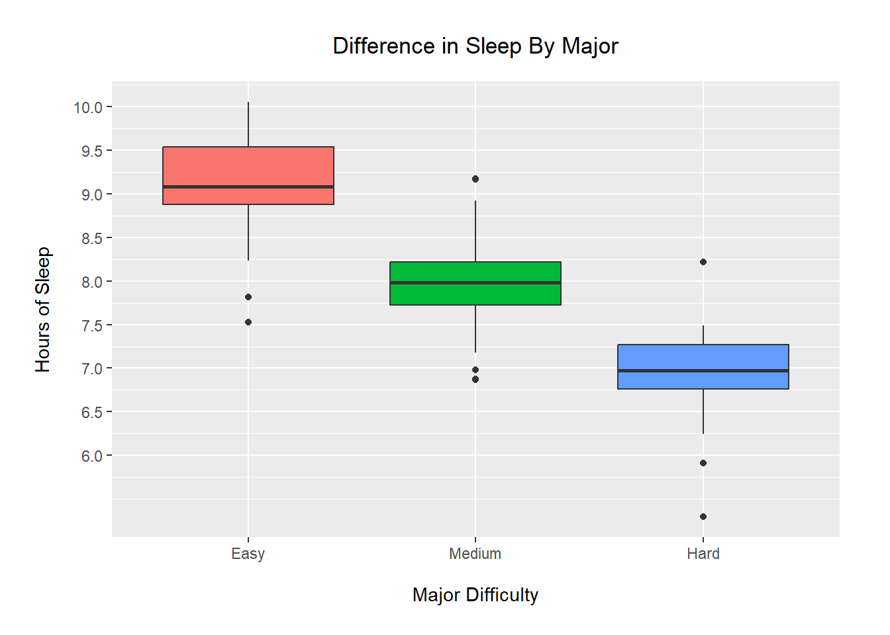
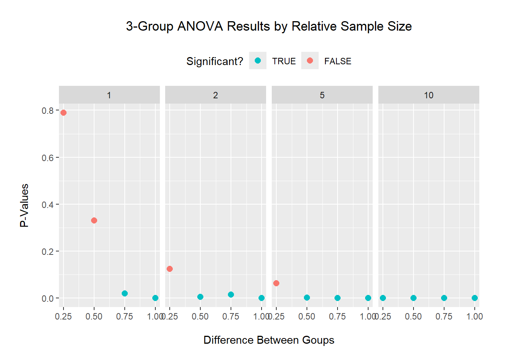

Think about an ongoing study in your lab (or a paper you have read in a different class), and decide on a pattern that you might expect in your experiment if a specific hypothesis were true.
I am looking at sleep (and other health metrics) broken out by major (and other demographics). I hypothesize that easier majors would have better sleep.
To start simply, assume that the data in each of your treatment groups follow a normal distribution. Specify the sample sizes, means, and variances for each group that would be reasonable if your hypothesis were true. You may need to consult some previous literature and/or an expert in the field to come up with these numbers.
I will look at three majors (easy, medium, hard) and total sleep time (in hours):
I chose the group means based on the recommended amount of sleep [source] and varied them to follow my hypothesis (more sleep = better).
I chose an equal variance for the groups to fit the ANOVA assumptions and a value of 0.5 based on the 68-95-99.7 rule for the normal distribution.
I chose a total sample size of 100, and group sizes based on the expectation that hard majors would be the least popular and medium ones would be the most common.
Using the methods we have covered in class, write code to create a random data set that has these attributes. Organize these data into a data frame with the appropriate structure.
major = rep(c("E","M","H"), c(30,50,20))
sleep = c(rnorm(30,9,0.5),
rnorm(50,8,0.5),
rnorm(20,7,0.5))
df <- data.frame(major=factor(major, levels=c("E","M","H")),
sleep=sleep)
str(df)## 'data.frame': 100 obs. of 2 variables:
## $ major: Factor w/ 3 levels "E","M","H": 1 1 1 1 1 1 1 1 1 1 ...
## $ sleep: num 9.55 9.32 9.52 9.08 9.57 ...
Now write code to analyze the data (probably as an ANOVA or regression analysis, but possibly as a logistic regression or contingency table analysis. Write code to generate a useful graph of the data.
mod <- aov(sleep ~ major, data=df)
anova(mod)## Analysis of Variance Table
##
## Response: sleep
## Df Sum Sq Mean Sq F value Pr(>F)
## major 2 57.517 28.7586 93.005 < 2.2e-16 ***
## Residuals 97 29.994 0.3092
## ---
## Signif. codes: 0 '***' 0.001 '**' 0.01 '*' 0.05 '.' 0.1 ' ' 1## - - - - - - -
library(ggplot2)## Warning: package 'ggplot2' was built under R version 4.3.3ggplot(df, aes(x=major, y=sleep)) +
geom_boxplot(aes(fill=major)) +
scale_x_discrete(labels=c("Easy","Medium","Hard")) +
scale_y_continuous(breaks=seq(6,10,0.5)) +
labs(title="Difference in Sleep By Major",
x="Major Difficulty",
y="Hours of Sleep") +
theme(plot.title=element_text(hjust=0.5, vjust=4),
plot.subtitle=element_text(hjust=0.5, vjust=4),
plot.caption=element_text(vjust=-7),
axis.title.x=element_text(vjust=-4),
axis.title.y=element_text(vjust=5),
plot.margin=margin(1, 1, 1, 1, "cm"),
legend.position="none")
Using an ANOVA, we find a significant difference in mean amount of sleep by major in our generated data. This difference is highlighted in the boxplots, as there is no overlap between the IQRs of any groups.
Try running your analysis multiple times to get a feeling for how variable the results are with the same parameters, but different sets of random numbers.
################################################################################
## FUNCTION: fake_data_analysis
## built-in: levels = E / M / H
## built-in: group sizes = 3 / 5 / 2
## built-in: means = mid-dif / mid / mid+dif
## input: mid = middle value ~ any real
## input: dif = effect size ~ any real
## input: sigma = variance ~ >= 0
## input: n = sample size factor ~ >= 1
## output: `aov` model
## -----------------------------------------------------------------------------
fake_data_analysis = function(mid=8, dif=-1, sigma=0.5, n=10){
## making data
M = c(mid-dif, mid, mid+dif)
N = n * c(3,5,2)
major = rep(c("E","M","H"), N)
sleep = c(rnorm(N[1],M[1],sigma),
rnorm(N[2],M[2],sigma),
rnorm(N[3],M[3],sigma))
df <- data.frame(major=factor(major, levels=c("E","M","H")),
sleep=sleep)
## fitting model
mod <- anova(aov(sleep ~ major, data=df))
## output
return(mod$`Pr(>F)`[1])
}
################################################################################
set.seed(91)
for (i in 1:5){
cat("Try", i, ": p-value =", signif(fake_data_analysis(),3), "\n")
}## Try 1 : p-value = 4.04e-21
## Try 2 : p-value = 1.04e-25
## Try 3 : p-value = 4.94e-22
## Try 4 : p-value = 3.69e-27
## Try 5 : p-value = 1.1e-24Repeating this process multiple times with the same parameters, we get different p-values (but all significant and very small).
Now, using a series of for loops, adjust the parameters of your data to explore how they might impact your results/analysis, and store the results of your for loops into an object so you can view it. For example, what happens if you were to start with a small sample size and then re-run your analysis? Would you still get a significant result? What if you were to increase that sample size by 5, or 10? How small can your sample size be before you detect a significant pattern (p < 0.05)? How small can the differences between the groups be (the “effect size”) for you to still detect a significant pattern?
set.seed(91)
x.dif = c(0.25, 0.5, 0.75, 1)
x.n = c(1, 2, 5, 10)
x.out = rep(NA, length(x.dif)*length(x.n))
count = 0
for (i in 1:length(x.dif)){
for (j in 1:length(x.n)){
count = count + 1
x.out[count] = fake_data_analysis(mid=8, dif=x.dif[i], sigma=0.5, n=x.n[j])
}
}
results = data.frame(effect.size = rep(x.dif, rep(length(x.n),length(x.dif))),
sample.size = rep(x.n, length(x.dif)),
pvalues = x.out,
significant = x.out<0.05)
ggplot(results, aes(x=effect.size, y=pvalues, color=significant)) +
geom_point(size=2.5) +
facet_wrap(~sample.size, nrow=1) +
scale_x_continuous(breaks=seq(0,1,0.25)) +
scale_color_manual(breaks = c(TRUE, FALSE),
values = scales::hue_pal(direction=-1)(2)) +
labs(title="3-Group ANOVA Results by Relative Sample Size",
x="Difference Between Goups",
y="P-Values",
color="Significant?") +
theme(plot.title=element_text(hjust=0.5, vjust=4),
plot.subtitle=element_text(hjust=0.5, vjust=4),
plot.caption=element_text(vjust=-7),
axis.title.x=element_text(vjust=-4),
axis.title.y=element_text(vjust=5),
plot.margin=margin(1, 1, 1, 1, "cm"),
legend.position="top")
Keeping an equal variance of 0.5: for a small sample size (factor of 1 means n=10), a difference of 0.75 between groups is needed to detect a significant difference. For medium sample sizes (n=20 and 50), a lower difference of 0.5 between groups is needed to detect a significant difference. And a larger sample size (n=100) detected a significant difference at all tested differences.
Alternatively, for the effect sizes you originally hypothesized, what is the minimum sample size you would need in order to detect a statistically significant effect? Again, run the model a few times with the same parameter set to get a feeling for the effect of random variation in the data.
set.seed(91)
for (i in 1:5){
cat("Try", i, ": p-value =", signif(fake_data_analysis(mid=8, dif=-1, sigma=0.5, n=1),3), "\n")
}## Try 1 : p-value = 0.0105
## Try 2 : p-value = 0.000479
## Try 3 : p-value = 0.0557
## Try 4 : p-value = 0.00626
## Try 5 : p-value = 0.0137The original difference of 1 between groups was significant at all tested sample sizes in the previous results, so I used the smallest value (factor of 1). Using this, 4/5 different data sets with the same creation parameters were found to have significant difference in group means via ANOVA.
Write up your results in a markdown file, organized with headers and different code chunks to show your analysis. Be explicit in your explanation and justification for sample sizes, means, and variances.